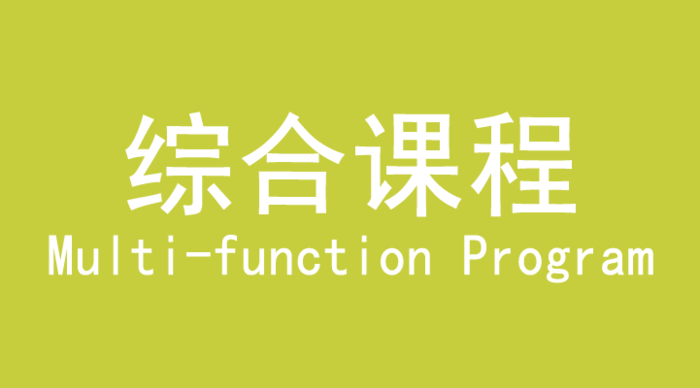

LUCKYBABY幸运宝贝早教机构利用与儿童各个敏感期完全吻合的课程设置和教具，通过生活、科学、感官、数学等阶段的教学来开发宝宝各个方面的潜能。加强自我服务意识和照顾自我的能力，不断提升社会性行为，使宝宝成为一个独立、自由、善于表达人生的个体。
【生活课程】
LUCKYBABY幸运宝贝早教机构全面的感官刺激，有趣的游戏，生活用具的使用，以及生活能力的培养，礼仪规范的形成，激发宝宝对学习兴趣，为宝宝一生的发展奠定坚实的基础。
【科学课程】
LUCKYBABY幸运宝贝早教机构有趣的科学实验可以培养宝宝的探索能力，学会发现科学，研究科学、体验科学、延伸科学、增强宝宝对科学学习的兴趣。
【感官课程】
LUCKYBABY幸运宝贝早教机构利用专业的教具以及教学环境，结合宝宝“吸收性心智”的特点，借助感官教具来发展孩子敏锐的感官神经。让宝宝学会从多角度观察问题以及解决问题的能力。
【数学课程】
LUCKYBABY幸运宝贝早教机构以“主题教育”为主要形式，通过丰富、多元化的课程内容，学习“四则运算”使宝宝获得智力的开发，通过前期生活 经验的积累，让孩子熟悉数量，认识逻辑性的数量概念，并有系统的进行学习。潜意识培养孩子的抽象力、想象力、理解力、判断力，建立学习的方法和能力。